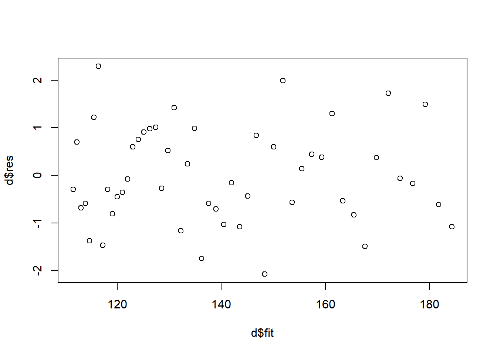

Monday, Feb 12
You can also download a PDF copy of this lecture.
Mathematical (statistical) models make assumptions, and results (statistical inferences) based on the models are derived using those assumptions.
Example: Assume that an object is a cone. It can be shown (with a little calculus) that \[ \text{V} = \pi r^2 h/3 \ \ \ \text{and} \ \ \ \text{A} = \pi r \left(r + \sqrt{r^2 + h^2}\right), \] based on the assumption that the object is a cone.
“All models are wrong but some are useful.’’ — George E. P. Box
Implicit Assumptions of Linear and Nonlinear Regression
Discussions of assumptions are based on an alternative representation of a regression model. A linear model can be written as \[ Y_i = \beta_0 + \beta_1 x_{i1} + \beta_2 x_{i2} + \cdots + \beta_k x_{ik} + \epsilon_i, \] and a nonlinear model can be written as \[ Y_i = f(x_{i1},x_{i2},\dots,x_{ik}) + \epsilon_i, \] where the linear model with \[ f(x_{i1}, x_{i2}, \dots, x_{ik}) = \beta_0 + \beta_1 x_{i1} + \beta_2 x_{i2} + \cdots + \beta_k x_{ik} \] is a special case.
There are four implicit assumptions about \(\epsilon_i\) that go into the derivation of routine/default methods for making inferences concerning the model.
\(E(\epsilon_i) = 0\) for all \(i\).
\(Var(\epsilon_i) = \sigma^2\) for all \(i\).
\(Cov(\epsilon_i, \epsilon_{i'}) = 0\) for all \(i \neq i'\).
Each \(\epsilon_i\) has a normal distribution.
How should we approach each assumption?
How do we define each assumption?
What are the consequences if the assumption is (very) wrong?
How do we detect if the assumption is (very) wrong?
What is/are the solution(s) if the assumption is (very) wrong?
Assumption 1: Zero Expectations of Errors
Definition: The assumption \(E(\epsilon_i) = 0\) implies that \(E(Y_i)\) depends on the explanatory variables in the way assumed by the model. That is, if we have the assumed model \[ E(Y_i) = f(x_{i1}, x_{i2}, \dots, x_{ik}) \] then \[ E(\epsilon_i) = 0 \Rightarrow E(Y_i) = f(x_{i1}, x_{i2}, \dots, x_{ik}). \] For the model to be a correct representation of the relationship between \(E(Y_i)\) and \(x_{i1}, x_{i2}, \dots, x_{ik}\) we require that \(E(\epsilon_i) = 0\) for all \(i = 1, 2, \dots, n\).
Consequences: Estimates of parameters or some functions thereof (e.g., linear combinations) may be biased.
Detection: Residuals are statistics that are frequently used to empirically investigate assumption violations. There are several types of residuals.
Raw residuals. These are simply estimates of \(\epsilon_i\). In a linear model, for example, the error is \[ \epsilon_i = Y_i - (\beta_0 + \beta_1 x_{i1} + \cdots + \beta_k x_{ik}), \] by definition, so a simple estimator of \(\epsilon_i\) is the residual \[ e_i = Y_i - \hat{Y_i}, \] where \[ \hat{Y}_i = \hat\beta_0 + \hat\beta_1 x_{i1} + \cdots + \hat\beta_k x_{ik}. \] We can define the raw residual in a similar way for a nonlinear model.
Standardized residuals. Defined as \[ z_i = \frac{e_i}{\text{SE}(e_i)}. \] If the model assumptions are correct then \(z_i\) is approximately standard normal in distribution so we expect that about 95% of such residuals to satisfy \(|z_i| < 2\).
Studentized residuals. Defined as \[ t_i = \frac{e_i}{\text{SE}_{(i)}(e_i)}, \] where \(\text{SE}_{(i)}(e_i)\) is the standard error of \(e_i\) estimated by leaving out that observation. This avoids bias in the standard error in cases where \(E(\epsilon_i) \neq 0\). If the model assumptions are met then each \(t_i\) has a \(t\) distribution with one less degree of freedom than the residual degrees of freedom (i.e., \(n - p - 1\) where \(p\) is the number of parameters in the model). Unless \(n-p-1\) is very small, we expect that about 95% of studentized residuals satisfy \(|t_i| < 2\).
What to look for in residuals:
Individual observations with exceptional residuals.
More residuals than expected overall that are exceptional.
Changes in the distribution of residuals when plotting against \(\hat{y}_i\).
Example: Consider the following artificial data. Suppose we tried a linear model.
mlinear <- lm(y ~ x, data = fakedata)
fakedata$yhat <- predict(mlinear) # y-hat values
fakedata$rese <- residuals(mlinear) # raw residuals
fakedata$rest <- rstudent(mlinear) # studentized residuals
head(fakedata) x y yhat rese rest
1 0.000 183.5 176.2 7.311 2.198
2 5.102 181.3 174.7 6.525 1.936
3 10.204 180.4 173.3 7.113 2.121
4 15.306 176.6 171.8 4.813 1.396
5 20.408 174.4 170.4 3.964 1.140
6 25.510 173.5 168.9 4.547 1.311p <- p + geom_line(aes(y = yhat), data = fakedata)
plot(p)What are the observations with “exceptionally large” residuals?
subset(fakedata, abs(rest) > 2) x y yhat rese rest
1 0.0 183.5 176.2 7.311 2.198
3 10.2 180.4 173.3 7.113 2.121library(dplyr)
fakedata %>% filter(abs(rest) > 2) x y yhat rese rest
1 0.0 183.5 176.2 7.311 2.198
2 10.2 180.4 173.3 7.113 2.121Are there any patterns?

p <- ggplot(fakedata, aes(x = yhat, y = rest))
p <- p + geom_segment(aes(x = yhat, xend = yhat, y = 0, yend = rest))
p <- p + geom_point() + theme_classic()
p <- p + labs(x = "Predicted Value", y = "Studentized Residual")
p <- p + geom_hline(yintercept = c(-2, 0, 2), linetype = 2)
plot(p)Let’s try the polynomial model \(E(Y_i) = \beta_0 + \beta_1 x_i + \beta_2 x_i^2\).
mpoly <- lm(y ~ poly(x, degree = 2), data = fakedata)
fakedata$yhat <- predict(mpoly)
fakedata$rest <- rstudent(mpoly)
p <- ggplot(fakedata, aes(x = x, y = y)) + theme_minimal()
p <- p + geom_point() + geom_line(aes(y = yhat))
plot(p)
p <- ggplot(fakedata, aes(x = yhat, y = rest)) +
geom_segment(aes(x = yhat, xend = yhat, y = 0, yend = rest)) +
geom_point() + theme_classic() +
labs(x = "Predicted Value", y = "Studentized Residual") +
geom_hline(yintercept = c(-2, 0, 2), linetype = 2)
plot(p)The “correct” model is the nonlinear model \[ E(Y_i) = \alpha + (\delta - \alpha)2^{-x_i/\gamma}. \]
mnlin <- nls(y ~ alpha + (delta - alpha) * 2^(-x / gamma),
data = fakedata, start = list(alpha = 80, delta = 180, gamma = 140))
library(trtools) # for the nlsint function
d <- nlsint(mnlin, residuals = TRUE)
head(d) fit se lwr upr hat res
1 184.3 0.3894 183.5 185.1 0.21231 -1.08147
2 181.7 0.3481 181.0 182.4 0.16966 -0.61684
3 179.2 0.3112 178.6 179.9 0.13564 1.49073
4 176.8 0.2788 176.2 177.3 0.10888 -0.16877
5 174.4 0.2510 173.9 174.9 0.08820 -0.06274
6 172.1 0.2276 171.6 172.5 0.07256 1.72687p <- ggplot(d, aes(x = fit, y = res)) +
geom_segment(aes(x = fit, xend = fit, y = 0, yend = res)) +
geom_point() + theme_classic() +
labs(x = "Predicted Value", y = "Standardized Residual") +
geom_hline(yintercept = c(-2, 0, 2), linetype = 2)
plot(p)Note that since we are usually not interested in created publication quality residual plots, we can do some quick-and-dirty plots with simpler (but uglier) graphics.
# when using lm
m <- lm(y ~ x, data = fakedata)
plot(predict(m), rstudent(m))# when using nls
mnlin <- nls(y ~ alpha + (delta - alpha) * 2^(-x / gamma),
data = fakedata, start = list(alpha = 80, delta = 180, gamma = 140))
d <- nlsint(mnlin, residuals = TRUE) # nlsint is from trtools package
plot(d$fit, d$res) Example: Consider a model where the expected MPG of cars is assumed to be a linear function of weight and rear axle ratio.
cars <- read.csv("http://webpages.uidaho.edu/~trjohns/cars.csv")
cars <- cars[,c(2,3,4,5)] # select columns 2, 3, 4, and 5
head(cars) car mpg weight ratio
1 Buick Estate Wagon 16.9 4.360 2.73
2 Ford Country Squire Wagon 15.5 4.054 2.26
3 Chevy Malibu Wagon 19.2 3.605 2.56
4 Chrysler LeBaron Wagon 18.5 3.940 2.45
5 Chevette 30.0 2.155 3.70
6 Toyota Corona 27.5 2.560 3.05m <- lm(mpg ~ weight + ratio, data = cars)
cars$yhat <- predict(m)
cars$rest <- rstudent(m)
subset(cars, abs(rest) > 2) car mpg weight ratio yhat rest
1 Buick Estate Wagon 16.9 4.36 2.73 10.32 3.944
34 Fiat Strada 37.3 2.13 3.10 32.67 2.348p <- ggplot(cars, aes(x = rest, y = car)) + geom_point() +
theme_classic() +
geom_segment(aes(x = 0, xend = rest, y = car, yend = car)) +
labs(x = "Studentized Residual", y = NULL)
plot(p)What is up with the Buick Estate Wagon?
Solutions: Modify the model. Drop offending obsrevations(s) if and only if you can justify restricting the scope of the model.
Assumption 2: Equality of Error Variances
Definition: In the regression model \[
Y_i = f(x_{i1}, x_{i2}, \dots, x_{ik}) + \epsilon_i,
\] we assume \(\mbox{Var}(\epsilon_i) =
\sigma^2\) which implies \(\mbox{Var}(Y_i) = \sigma^2\). This is
called “homoscedasticty” or sometimes “homogeneity of variance” in the
context of linear models for designed experiments. A more complete
description of the assumed model is \[\begin{align}
E(Y_i) & = f(x_{i1}, x_{i2}, \dots, x_{ik}), \\
\text{Var}(Y_i) & = \sigma^2.
\end{align}\] Note that the estimator \(\hat\sigma^2\), the square of the “residual
standard error” reported by summary, is computed as \[
\hat\sigma^2 = \frac{\sum_{i=1}^n (y_i - \hat{y}_i)^2}{n-p},
\] where \(p\) is the number of
parameters in the part of the model for \(E(Y_i)\) (which is \(p = k + 1\) in a linear model with a \(\beta_0\) term and \(k\) explanatory variables).
Consequences: Severe violations of homoscedaticity can result in two problems.
Biased standard errors, incorrect p-values, and incorrect confidence/prediction intervals.
Inefficient estimation of model parameters (and functions thereof).
Detection: Many common patterns of heteroscedasticity can be found by plotting standardized or studentized residuals against \(\hat{y}_i\).
Example: Consider the following data on survival time of terminal cancer patients given a supplement of ascorbate (i.e., vitamin C).
library(Stat2Data)
data(CancerSurvival) # this package requires that we "load" the data
head(CancerSurvival) Survival Organ
1 124 Stomach
2 42 Stomach
3 25 Stomach
4 45 Stomach
5 412 Stomach
6 51 StomachFor plotting purposes we can order the levels of Organ according to
mean survival using reorder.
CancerSurvival$Organ <- with(CancerSurvival, reorder(Organ, Survival, mean))The with function implies that each variable is “with”
the data frame CancerSurvival. This is sometimes nicer than
having to identify the data frame explicitly as in the following.
CancerSurvival$Organ <- reorder(CancerSurvival$Organ, CancerSurvival$Survival, mean)Here is a plot of the data using geom_jitter to space
out the points.
p <- ggplot(CancerSurvival, aes(x = Organ, y = Survival)) +
geom_jitter(height = 0, width = 0.25) +
labs(y = "Survival Time (Days)") + theme_classic()
plot(p)Here we can see some descriptive statistics.
library(dplyr)
CancerSurvival %>% group_by(Organ) %>%
summarize(mean = mean(Survival), stdev = sd(Survival), obs = n())# A tibble: 5 × 4
Organ mean stdev obs
<fct> <dbl> <dbl> <int>
1 Bronchus 212. 210. 17
2 Stomach 286 346. 13
3 Colon 457. 427. 17
4 Ovary 884. 1099. 6
5 Breast 1396. 1239. 11Now consider a linear model that assumes homoscedasticity.
m <- lm(Survival ~ Organ, data = CancerSurvival)
CancerSurvival$yhat <- predict(m)
CancerSurvival$rest <- rstudent(m)
head(CancerSurvival) Survival Organ yhat rest
1 124 Stomach 286 -0.2498
2 42 Stomach 286 -0.3765
3 25 Stomach 286 -0.4029
4 45 Stomach 286 -0.3719
5 412 Stomach 286 0.1943
6 51 Stomach 286 -0.3626p <- ggplot(CancerSurvival, aes(x = yhat, y = rest, color = Organ)) +
geom_point(alpha = 0.5) + theme_classic() +
labs(x = "Predicted Value", y = "Studentized Residual")
plot(p)Example: Consider the following data from a study on the effects of fuel reduction on biomass.
library(trtools) # for biomass data
m <- lm(suitable ~ -1 + treatment:total, data = biomass)
summary(m)$coefficients Estimate Std. Error t value Pr(>|t|)
treatmentn:total 0.1056 0.04183 2.524 1.31e-02
treatmenty:total 0.1319 0.01121 11.773 7.61e-21d <- expand.grid(treatment = c("n","y"), total = seq(0, 2767, length = 10))
d$yhat <- predict(m, newdata = d)
p <- ggplot(biomass, aes(x = total, y = suitable, color = treatment)) +
geom_point() + geom_line(aes(y = yhat), data = d) + theme_minimal() +
labs(x = "Total Biomass (kg/ha)", y = "Suitable Biomass (kg/ha)",
color = "Treatment")
plot(p)biomass$yhat <- predict(m)
biomass$rest <- rstudent(m)
p <- ggplot(biomass, aes(x = yhat, y = rest, color = treatment)) +
geom_point() + theme_minimal() +
labs(x = "Predicted Value", y = "Studentized Residual",
color = "Treatment")
plot(p)Solutions: There are several possible solutions.
Response variable transformation.
Weighted least squares.
Robust standard error estimators.
Models that do not assume constant variance.
We will discuss each of these in turn soon.